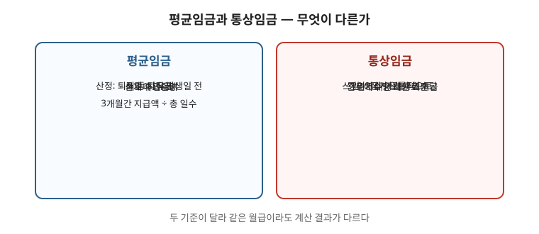

최저임금은 시급만 비교하면 판단을 틀립니다. 수당·주휴·공제를 함께 봐야 실제 임금이 나옵니다. 이 글은 최저임금 적용 방식과 주휴수당 발생 요건을 함께 정리한 안내입니다. 금액·산입 범위는 매년 고시로 바뀌므로 고용노동부 고시로 그 해 기준을 확인하세요. 시간급 환산 점검은 최저임금 점검 글 순서대로 하세요.

한눈에 보는 표
| 항목 | 요건 | 확인할 것 |
|---|---|---|
| 최저임금 | 모든 근로자 원칙 적용, 매년 고시 | 그 해 고시액, 산입 범위 |
| 비교 방법 | 월급 ÷ 소정근로시간 = 시간급 | 주휴 포함 여부, 식대·교통비 산입 여부 |
| 주휴수당 | 주 15시간 이상 + 소정근로일 개근 | 결근 주 발생 여부, 단시간 계산 |
1. 최저임금은 어떻게 정해지나
- 매년 심의·고시로 정해지고, 사업장 규모나 업종과 무관하게 모든 근로자에게 적용되는 것이 원칙입니다. 다만 수습 기간 등 일부 예외가 있어 요건을 따져야 합니다.
- 금액은 해마다 바뀌므로 문서에 숫자를 박아 두면 곧 틀린 정보가 됩니다. 항상 고시된 최신 값을 확인하세요. 2027년 적용 시간급 10,700원 경과는 소식 글을 보세요.
2. 비교할 때 빠지기 쉬운 것
- 월급으로 받는 경우에는 소정근로시간으로 나눠 시급을 환산해 비교합니다. 여기에 주휴수당이 포함돼 있는지, 별도인지에 따라 결과가 달라집니다. 명세서상 “주휴” 항목을 먼저 찾으세요.
- 식대·교통비 등이 최저임금에 산입되는지 여부도 확인 대상입니다. 산입 여부는 매년 고시 내용을 봐야 합니다. 관련 글 급여명세서 읽기에서 항목별 확인법을 보세요.
3. 주휴수당의 요건
- 1주일에 15시간 이상 근무하고 해당 주의 소정근로일을 개근한 경우 주휴수당이 발생하는 것이 일반적인 해석입니다. 단시간 근로자가 특히 문제 되므로 주별 개근 여부를 달력에 표시하세요.
- 결근한 주는 주휴수당이 발생하지 않을 수 있습니다. 지각·조퇴와 결근을 구분해 기록하는 것이 중요합니다.
- 사업장 규모·고용형태에 따라 다툼이 있는 지점이 있으므로, 자기 사례는 점검 글 계산 후 노무 상담으로 확인하는 편이 안전합니다.
4. 미달일 때 대응
- 최저임금 미달은 임금체불과 같은 절차로 다툴 수 있습니다. 급여명세서와 근로계약서를 확보하고 진정을 검토하세요. 관련 글 임금체불 대응·진정 방법 순서대로 진행하세요.
- 계약서에 ‘최저임금’이라고 적혀 있어도 실제 지급액이 미달이면 효력이 없습니다. 문서와 실제 지급 내역을 함께 보관하세요.
자주 틀리는 3가지
- “주휴수당은 정규직만” — 주 15시간 이상이면 고용형태와 무관하게 요건을 따집니다.
- “결근해도 주휴는 나온다” — 소정근로일 개근이 요건이라 결근 주는 발생하지 않을 수 있습니다.
- “명세서에 주휴가 없으면 없는 것” — 미지급일 수 있습니다. 환산 계산으로 확인하세요.
현장 체크리스트
- □ 그 해 최저임금 고시액을 확인했는가
- □ 월급을 시간급으로 환산했는가
- □ 명세서에서 주휴 항목을 찾았는가
- □ 주별 개근 여부를 기록했는가
- □ 미달 시 서면 요구 → 진정 순서를 밟았는가
자주 묻는 질문
- Q. 주 14시간 일하는데 주휴가 있나요? — A. 15시간 미만이면 발생하지 않는 것이 일반적 해석입니다. 소정시간 계산을 먼저 확인하세요.
- Q. 하루 결근했는데 그 주 주휴는요? — A. 개근 요건을 못 채우면 발생하지 않을 수 있습니다.
- Q. 식대가 최저임금에 포함되나요? — A. 매월 고정 지급 여부와 고시 산입 범위에 따라 달라집니다.
- Q. 수습이라 최저임금 90%만 준답니다. — A. 감액 가능 요건·기간이 법으로 한정되어 있습니다. 계약 기간과 업무를 확인하세요.
근거와 원문
이 글은 2026-09-19 기준 일반 안내입니다. 최저임금 고시 금액과 산입 범위는 매년 바뀌므로 최신 고시를 확인하세요. 법률 자문이 아닙니다.